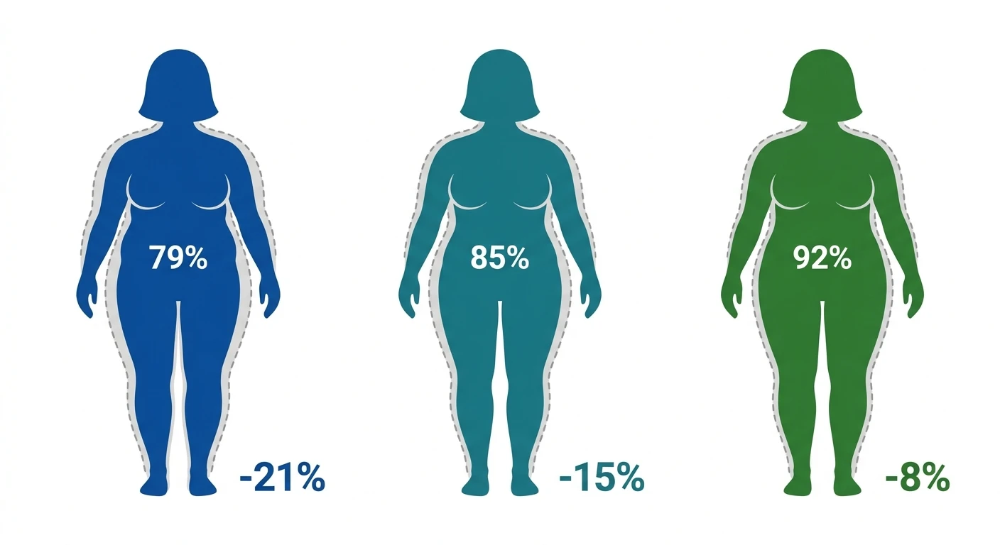

Přehled ze syntézy 80+ klinických studií.
Žádné názory — jen data.
Když se najíte, střevo vyplaví hormon GLP-1. Ten doputuje k mozku, zpomalí žaludek a vyvolá pocit sytosti.
Problém: tělo si tento signál samo zlikviduje — přirozeně vydrží přibližně dvě minuty a zmizí.
Tyto léky jsou napodobeniny téhož hormonu, ale upravené tak, aby vydržely celé dny. Mozek nepřetržitě dostává signál „jsem plný" — i když člověk nejedl.
V prvních ~4 měsících se dávka postupně zvyšuje. Právě v tomto období se u části pacientů objeví nevolnost, zvracení nebo průjem. Po stabilizaci dávky potíže většinou odeznívají.
Čísla níže ukazují, u kolika % pacientů se potíže objevily alespoň jednou za toto období. Jsou očištěná o placebo (odečteno, co by se stalo i bez léku). Data z >9 300 pacientů.
Obézní dospělí bez cukrovky

| Lék | ≥5 % | ≥10 % | ≥15 % | ≥20 % |
|---|---|---|---|---|
| Mounjaro | 91 % | 79 % | 68 % | 57 % |
| Wegovy | 86 % | 69 % | 51 % | 32 % |
| Saxenda | 63 % | 33 % | ~14 % | ~5 % |
Wegovy HD 7,2 mg (nový, duben 2026): průměrný úbytek −20,7 % (1 407 pacientů).
Při cukrovce 2. typu je účinek o 5–6 procentních bodů nižší u všech tří léků.
Victoza 1,8 mg (diabetická dávka, ne na hubnutí): −13 % KV příhod, −15 % úmrtnost (9 340 pacientů)
Mounjaro: −8 % KV příhod (statisticky neprůkazné), ~16 % redukce úmrtnosti (13 165 pacientů, srovnání s jiným lékem)
Wegovy 2,4 mg: −22 % (17 604 pacientů, prokázáno i u nediabetiků)
Mounjaro: −33 % (1 241 pacientů)
Saxenda: 79% snížení za 3 roky (2 254 pacientů)
Wegovy: 81 % dosáhlo normoglykémie za 52 týdnů
Co se šíří na internetu — a co říkají data
Nejúčinnější, nejlépe snášený (nejméně nevolnosti). Chybí důkazy o snížení úmrtnosti. 1× týdně.
Zlatý standard pro ochranu srdce (−20 % infarktů, −19 % úmrtí na 17 604 pacientech). 1× týdně.
Nejslabší, ale nejlevnější. Bez důkazů o snížení úmrtnosti. 1× denně.
Praktický průvodce podle českých doporučených postupů a zveřejněných kritérií FN Brno